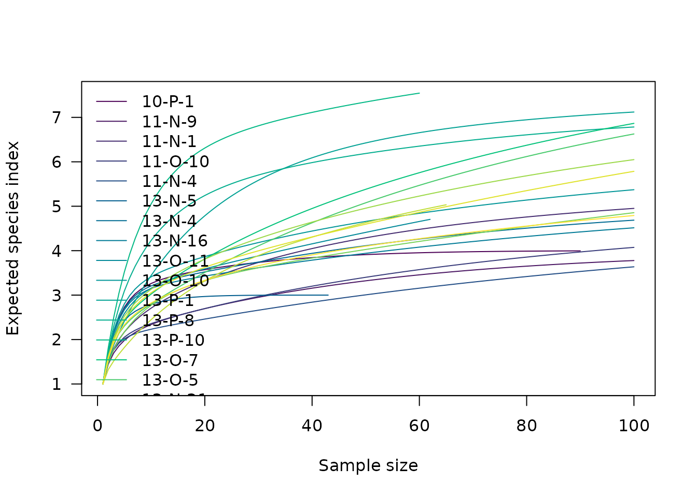

Diversity in ecology describes complex interspecific interactions between and within communities under a variety of environmental conditions (Bobrowsky & Ball 1989). This concept covers different components, allowing different aspects of interspecific interactions to be measured.
Diversity measurement assumes that all individuals in a specific taxa are equivalent and that all types are equally different from each other (Peet 1974). A measure of diversity can be achieved by using indices built on the relative abundance of taxa. These indices (sometimes referred to as non-parametric indices) benefit from not making assumptions about the underlying distribution of taxa abundance: they only take relative abundances of the species that are present and species richness into account. Peet (1974) refers to them as indices of heterogeneity (\(H\)). Diversity indices focus on one aspect of the taxa abundance and emphasize either richness (\(R\); weighting towards uncommon taxa) or dominance (\(D\); weighting towards abundant taxa; Magurran 1988). Evenness (\(E\)) is a measure of how evenly individuals are distributed across the sample.
alpha diversity refers to diversity at the local level, assessed within a delimited system. It is the diversity within a uniform habitat of fixed size.
tabula allows to calculate several alpha diversity measures from a count table (absolute frequencies giving the number of individuals for each category, i.e. a contingency table), and also provides comparison methods. It assumes that you keep your data tidy: each variable (type/taxa) must be saved in its own column and each observation (sample/case) must be saved in its own row.
## Install extra packages (if needed)
# install.packages("folio") # Datasets
## Load package
library(tabula)
## Ceramic data from Lipo et al. 2015
data("mississippi", package = "folio")
## Heterogeneity
heterogeneity(mississippi, method = "shannon")
#> [1] 1.2027955 0.7646565 0.9293974 0.8228576 0.7901428 0.9998430 1.2051989
#> [8] 1.1776226 1.1533432 1.2884172 1.1725355 1.5296294 1.7952443 1.1627477
#> [15] 1.0718463 0.9205717 1.1751002 0.7307620 1.1270126 1.0270291
## Evenness
evenness(mississippi, method = "shannon")
#> [1] 0.8676335 0.5515831 0.5187066 0.5112702 0.4909433 0.9100964 0.7488322
#> [8] 0.7316981 0.6436931 0.7190793 0.5638704 0.7860740 0.8633300 0.5049749
#> [15] 0.4654969 0.4427014 0.5651037 0.3514222 0.4894554 0.4938966
## Richness
richness(mississippi, method = "margalef")
#> [1] 0.5963696 0.4524421 0.6971143 0.6193544 0.5599404 0.4577237 0.7292886
#> [8] 0.7779583 1.0304965 0.9224182 1.1892416 1.1412278 1.5518107 1.2645413
#> [15] 1.2090820 1.0903435 1.1570758 1.1892416 1.2552092 1.0158754
## Asymptotic species richness
composition(mississippi, method = "chao1")
#> [1] 4.000000 4.000000 6.000000 5.000000 5.000000 3.000000 5.000000
#> [8] 5.000000 7.984375 6.000000 8.000000 7.000000 8.494505 10.000000
#> [15] 10.000000 8.998371 8.498821 8.249306 10.000000 8.499491Under the hood, the index_*() functions are called (see
details below).
Thereafter, we denote by:
- \(S\) the total number of taxa recorded,
- \(\hat{S}\) the number of expected or predicted species/types,
- \(i\) the rank of the taxon
- \(n_i\) the number of individuals in the \(i\)-th taxon,
- \(n = \sum n_i\) the total number of individuals,
- \(p_i\) the relative proportion of the \(i\)-th taxon in the population
When \(p_i\) is unknown in the population, an estimate is given by \(\hat{p}_i =\frac{n_i}{N}\) (maximum likelihood estimator - MLE).
## Abundance data from Magurran (1988), p. 145
woodland <- c(35, 26, 25, 21, 16, 11, 6, 5, 3, 3, 3, 3, 3, 2, 2, 2, 1, 1, 1, 1)Heterogeneity and Evenness
Information theory index
Shannon-Wiener diversity index
The Shannon-Wiener index (Shannon 1948) assumes that individuals are randomly sampled from an infinite population and that all taxa are represented in the sample (it does not reflect the sample size). The main source of error arises from the failure to include all taxa in the sample: this error increases as the proportion of species discovered in the sample declines (Peet 1974; Magurran 1988).
Heterogeneity for a finite sample:
\[ H = - \sum_{i = 1}^{S} \hat{p}_i \ln \hat{p}_i \]
index_shannon(woodland)
#> [1] 2.407983The used of the maximum likelihood estimator (MLE) is known to be negatively biased by sample size (this error is rarely significant; Peet 1974).
With a bias correction (if unbiased is
TRUE):
\[ H = - \sum_{i = 1}^{S} \hat{p}_i \ln \hat{p}_i + \frac{S - 1}{2n} \]
index_shannon(woodland, unbiased = TRUE)
#> [1] 2.463865Evenness:
\[ E = \frac{H}{\ln S} = - \sum_{i = 1}^{S} \hat{p}_i \log_S \hat{p}_i \]
index_shannon(woodland, evenness = TRUE)
#> [1] 0.8038044Brillouin diversity index
The Brillouin index (Brillouin 1956) describes a known collection: it does not assume random sampling in an infinite population. Pielou (1975) and Laxton (1978) argue for the use of the Brillouin index in all circumstances, especially in preference to the Shannon index.
Heterogeneity:
\[ H = \frac{\ln (n!) - \sum_{i = 1}^{S} \ln (n_i!)}{n} \]
index_brillouin(woodland)
#> [1] 2.230661Evenness:
\[ E = \frac{H}{H_{max}} \]
with:
\[ H_{max} = \frac{1}{n} \ln \frac{n!}{\left( \lfloor \frac{n}{S} \rfloor! \right)^{S - r} \left[ \left( \lfloor \frac{n}{S} \rfloor + 1 \right)! \right]^{r}} \]
where: \(r = n - S \lfloor \frac{n}{S} \rfloor\).
index_brillouin(woodland, evenness = TRUE)
#> [1] 0.8025508Dominance index
The following methods return a dominance index, not the reciprocal or inverse form usually adopted, so that an increase in the value of the index accompanies a decrease in diversity.
Simpson index
The Simpson index (Simpson 1949) expresses the probability that two individuals randomly picked from a finite sample belong to two different types. It can be interpreted as the weighted mean of the proportional abundances. This metric is a true probability value, it ranges from \(0\) (all taxa are equally present) to \(1\) (one taxon dominates the community completely).
Dominance for an infinite sample:
\[ D = \sum_{i = 1}^{S} p_i^2 \]
Dominance for a finite sample:
\[ D = \sum_{i = 1}^{S} \frac{n_i \left( n_i - 1 \right)}{n \left( n - 1 \right)} \]
index_simpson(woodland)
#> [1] 0.1199308
index_simpson(woodland, evenness = TRUE)
#> [1] 0.4169071McIntosh index
The McIntosh index (McIntosh 1967) expresses the heterogeneity of a sample in geometric terms. It describes the sample as a point of a \(S\)-dimensional hypervolume and uses the Euclidean distance of this point from the origin.
Dominance:
\[ D = \frac{n - U}{n - \sqrt{n}} \]
Evenness:
\[ E = \frac{n - U}{n - \frac{n}{\sqrt{S}}} \]
where \(U\) is the distance of the sample from the origin in an \(S\) dimensional hypervolume:
\[U = \sqrt{\sum_{i = 1}^{S} n_i^2}\]
index_mcintosh(woodland)
#> [1] 0.7079901
index_mcintosh(woodland, evenness = TRUE)
#> [1] 0.8419571Berger-Parker index
The Berger-Parker index (Berger & Parker 1970) expresses the proportional importance of the most abundant type. This metric is highly biased by sample size and richness, moreover it does not make use of all the information available from sample.
Dominance:
\[ D = \frac{n_{max}}{N} \]
index_berger(woodland)
#> [1] 0.2058824Richness
The number of different taxa, provides an instantly comprehensible expression of diversity. While the number of taxa within a sample is easy to ascertain, as a term, it makes little sense: some taxa may not have been seen, or there may not be a fixed number of taxa (e.g. in an open system; Peet 1974). As an alternative, richness (\(R\)) can be used for the concept of taxa number (McIntosh 1967). Richness refers to the variety of taxa/species/types present in an assemblage or community (Bobrowsky & Ball 1989) as “the number of species present in a collection containing a specified number of individuals” (Hurlbert 1971).
| Measure | Reference |
|---|---|
| \[ R_{1} = \frac{S - 1}{\ln N} \] | Margalef (1958) |
| \[ R_{2} = \frac{S}{\sqrt{N}} \] | Menhinick (1964) |
index_margalef(woodland)
#> [1] 3.699522
index_menhinick(woodland)
#> [1] 1.53393Asymptotic Species Richness
Estimators of asymptotic richness are based on the frequencies of rare species in the original sampling data.
Chao1 estimator (Chao 1984)
\[ \hat{S}_{Chao1} = \begin{cases} S + \frac{n - 1}{n} \frac{F_1^2}{2 F_2} & F_2 > 0 \\ S + \frac{n - 1}{n} \frac{F_1 (F_1 - 1)}{2} & F_2 = 0 \end{cases} \]
Where \(F_1\) is the number of singleton species and \(F_2\) the number of doubleton species.
index_chao1(woodland)
#> [1] 22.65098In the special case of homogeneous case, a bias-corrected estimator is:
\[ \hat{S}_{Chao1} = S + \frac{n - 1}{n} \frac{F_1 (F_1 - 1)}{2 F_2 + 1}\]
index_chao1(woodland, unbiased = TRUE)
#> [1] 21.49118The improved Chao1 estimator (Chiu et al. 2014) makes use of the additional information of tripletons (\(F_3\)) and quadrupletons (\(F_4\)):
\[ \hat{S}_{iChao1} = \hat{S}_{Chao1} + \frac{n - 3}{4 n} \frac{F_3}{F_4} \times \max\left(F_1 - \frac{n - 3}{n - 1} \frac{F_2 F_3}{2 F_4} , 0\right)\]
index_chao1(woodland, improved = TRUE)Abundance-based Coverage Estimator (Chao & Lee 1992)
\[ \hat{S}_{ACE} = \hat{S}_{abun} + \frac{\hat{S}_{rare}}{\hat{C}_{ACE}} + \frac{F_1}{\hat{C}_{ACE}} \times \hat{\gamma}^2_{ACE} \]
Where \(\hat{S}_{rare} = \sum_{i = 1}^{k} F_i\) is the number of rare taxa, \(\hat{S}_{abun} = \sum_{i > k}^{N} F_i\) is the number of abundant taxa (for a given cut-off value \(k\)), \(\hat{C}_{ACE} = 1 - \frac{F_1}{n_{rare}}\) is the Turing’s coverage estimate and:
\[ \hat{\gamma}^2_{ACE} = \max\left[\frac{\hat{S}_{rare}}{\hat{C}_{ACE}} \frac{\sum_{i = 1}^{k} i(i - 1)F_i}{n_{rare}\left(n_{rare} - 1\right)} - 1, 0\right] \]
index_ace(woodland)
#> [1] 22.0875Squares estimator (Alroy 2018)
The squares richness estimator is designed to be more accurate than Chao1 when abundance distributions are even:
\[ \hat{S} = S + \frac{F_1^2}{n^2 - F_1 \times S} \sum_{i = 1}^{S} n_i^2 \]
index_squares(woodland)
#> [1] 21.92422Quadrat richness
For replicated incidence data (i.e. presence/absence data in two or more sampled quadrats of equal size; a \(m \times p\) incidence matrix), the Chao2 estimator is:
Chao2 estimator (Chao 1987)
\[ \hat{S}_{Chao2} = \begin{cases} S + \frac{m - 1}{m} \frac{q_1^2}{2 q_2} & q_2 > 0 \\ S + \frac{m - 1}{m} \frac{q_1 (q_1 - 1)}{2} & q_2 = 0 \end{cases} \]
Improved Chao2 estimator (Chiu et al. 2014):
\[ \hat{S}_{iChao2} = \hat{S}_{Chao2} + \frac{m - 3}{4 m} \frac{q_3}{q_4} \times \max\left(q_1 - \frac{m - 3}{m - 1} \frac{q_2 q_3}{2 q_4} , 0\right)\]
Incidence-based Coverage Estimator (Chao & Chiu 2016)
\[ \hat{S}_{ICE} = \hat{S}_{freq} + \frac{\hat{S}_{infreq}}{\hat{C}_{infreq}} + \frac{q_1}{\hat{C}_{infreq}} \times \hat{\gamma}^2_{infreq} \]
Where \(\hat{S}_{infreq} = \sum_{i = 1}^{k} q_i\) is the number of infrequent taxa, \(\hat{S}_{freq} = \sum_{i > k}^{N} q_i\) is the number of frequent taxa (for a given cut-off value \(k\)), \(\hat{C}_{infreq} = 1 - \frac{Q_1}{\sum_{i = 1}^{k} iq_i}\) is the Turing’s coverage estimate and:
\[ \hat{\gamma}^2_{infreq} = \max\left[\frac{\hat{S}_{infreq}}{\hat{C}_{infreq}} \frac{m_{infreq}}{m_{infreq} - 1} \frac{\sum_{i = 1}^{k} i(i - 1)q_i}{\left(\sum_{i = 1}^{k} iq_i\right)\left(\sum_{i = 1}^{k} iq_i - 1\right)} - 1, 0\right] \]
Where \(m_{infreq}\) is the number of sampling units that include at least one infrequent species.
Rarefaction
It is not always possible to ensure that all sample sizes are equal and the number of different taxa increases with sample size and sampling effort (Magurran 1988). Then, rarefaction (\(\hat{S}\)) is the number of taxa expected if all samples were of a standard size \(n\) (i.e. taxa per fixed number of individuals). Rarefaction assumes that imbalances between taxa are due to sampling and not to differences in actual abundances.
## Baxter rarefaction
RA <- rarefaction(mississippi, sample = 100, method = "baxter")
plot(RA)
Hurlbert (1971) unbiased estimate of Sander (1968) rarefaction
\[ E(S) = \sum_{i = 1}^{S} \left[ 1 - \frac{{n - n_i} \choose m}{n \choose m} \right] \]
Baxter (2001) rarefaction
\[ E(S) = \sum_{i = 1}^{S} \left[ 1 - \frac{(n - n_i)!(n - m)!}{(n - n_i - m)!n!} \right] \]
Where:
- \(S\) is the number of observed species/types,
- \(n_i\) is the number of individuals in the \(i\)-th species/type,
- \(n = \sum_{i = 1}^{S} n_i\) is the total number of individuals,
- \(m\) is the sub-sample size.
References
Alroy, J. (2018). Limits to Species Richness in Terrestrial Communities. Ecology Letters, 21(12): 1781-1789. 10.1111/ele.13152.
Baxter, M. J. (2001). Methodological Issues in the Study of Assemblage Diversity. American Antiquity, 66(4): 715-725. DOI: 10.2307/2694184.
Berger, W. H. & Parker, F. L. (1970). Diversity of Planktonic Foraminifera in Deep Sea Sediments. Science, 168(3937): 1345-1347. DOI: 10.1126/science.168.3937.1345.
Bobrowsky, P. T. & Ball, B. F. (1989). The Theory and Mechanics of Ecological Diversity in Archaeology. In R. D. Leonard & G. T. Jones (Eds.), Quantifying Diversity in Archaeology, 4-12. New Directions in Archaeology. Cambridge: Cambridge University Press.
Bowman, K. O., Hutcheson, K., Odum, E. P. & Shenton, L. R. (1971). Comments on the Distribution of Indices of Diversity. In E. C. Patil, E. C. Pielou & W. E. Waters (Eds.), Statistical Ecology, 3:315-366. University Park, PA: Pennsylvania State University Press.
Brillouin, L. (1956). Science and Information Theory. New York: Academic Press.
Chao, A. (1984). Nonparametric Estimation of the Number of Classes in a Population. Scandinavian Journal of Statistics, 11(4): 265-270.
Chao, A. (1987). Estimating the Population Size for Capture Recapture Data with Unequal Catchability. Biometrics, 43(4): 783-791. DOI: 10.2307/2531532.
Chao, A. & Lee, S.-M. (1992). Estimating the Number of Classes Via Sample Coverage. Journal of the American Statistical Association, 87(417): 210-217. DOI: 10.1080/01621459.1992.10475194.
Chao, A. & Chiu, C.-H. (2016). Species Richness: Estimation and Comparison. In N. Balakrishnan, T. Colton, B. Everitt, W. Piegorsch, F. Ruggeri & J. L. Teugels (Eds.), Wiley StatsRef: Statistics Reference Online, 1-26. Chichester, UK: John Wiley & Sons, Ltd. DOI: 10.1002/9781118445112.stat03432.pub2.
Chiu, C.-H., Wang, Y.-T., Walther, B. A. & Chao, A. (2014). An Improved Nonparametric Lower Bound of Species Richness Via a Modified Good-Turing Frequency Formula. Biometrics, 70(3): 671-682. DOI: 10.1111/biom.12200.
de Caprariis, P., Lindemann, R. H. & Collins, C. M. (1976). A Method for Determining Optimum Sample Size in Species Diversity Studies. Journal of the International Association for Mathematical Geology, 8(5): 575-581. DOI: 10.1007/BF01042995.
Fisher, R. A., Corbet, A. S. & Williams, C. B. (1943). The Relation Between the Number of Species and the Number of Individuals in a Random Sample of an Animal Population. The Journal of Animal Ecology, 12(1): 42. DOI: 10.2307/1411.
Gleason, H. A. (1922). On the Relation Between Species and Area. Ecology, 3(2): 158-162. DOI: 10.2307/1929150.
Hurlbert, S. H. (1971). The Nonconcept of Species Diversity: A Critique and Alternative Parameters. Ecology, 52(4): 577-586. DOI: 10.2307/1934145.
Hutcheson, K. (1970). A Test for Comparing Diversity Based on the Shannon Formula. Journal of Theoretical Biology, 29(1): 151-154. DOI: 10.1016/0022-5193(70)90124-4.
Kilburn, P. D. (1966). Analysis of the Species-Area Relation. Ecology, 47(5): 831-843. DOI: 10.2307/1934269.
Laxton, R. R. (1978). The Measure of Diversity. Journal of Theoretical Biology, 70(1): 51-67. DOI: 10.1016/0022-5193(78)90302-8.
Macarthur, R. H. (1965). Patterns of Species Diversity. Biological Reviews, 40(4): 510-533. DOI: 10.1111/j.1469-185X.1965.tb00815.x.
Magurran, A. E. (1988). Ecological Diversity and Its Measurement. Princeton, NJ: Princeton University Press.
Margalef, R. (1958). Information Theory in Ecology. General Systems, 3: 36-71.
McIntosh, R. P. (1967). An Index of Diversity and the Relation of Certain Concepts to Diversity. Ecology, 48(3): 392-404. DOI: 10.2307/1932674.
Menhinick, E. F. 1964. A Comparison of Some Species-Individuals Diversity Indices Applied to Samples of Field Insects. Ecology, 45(4): 859-861. 10.2307/1934933.
Odum, H. T., Cantlon, J. E. and Kornicker, L. S. (1960). An Organizational Hierarchy Postulate for the Interpretation of Species-Individual Distributions, Species Entropy, Ecosystem Evolution, and the Meaning of a Species-Variety Index. Ecology, 41(2): 395-395. 10.2307/1930248.
Peet, R. K. (1974). The Measurement of Species Diversity. Annual Review of Ecology and Systematics, 5(1), 285-307. DOI: 10.1146/annurev.es.05.110174.001441.
Pielou, E. C. (1975). Ecological Diversity. New York: Wiley.
Preston, F. W. (1948). The Commonness, and Rarity, of Species. Ecology, 29(3): 254-283. DOI: 10.2307/1930989.
Preston, F. W. (1962a). The Canonical Distribution of Commonness and Rarity: Part I. Ecology, 43(2): 185. DOI: 10.2307/1931976.
Preston, F. W. (1962b). The Canonical Distribution of Commonness and Rarity: Part II. Ecology, 43(3): 410-432. DOI: 10.2307/1933371.
Sander, H. L. (1968). Marine Benthic Diversity: A Comparative Study. The American Naturalist, 102(925): 243-282.
Shannon, C. E. (1948). A Mathematical Theory of Communication. The Bell System Technical Journal, 27, 379-423. DOI: 10.1002/j.1538-7305.1948.tb01338.x.
Simpson, E. H. (1949). Measurement of Diversity. Nature, 163(4148): 688-688. DOI: 10.1038/163688a0.